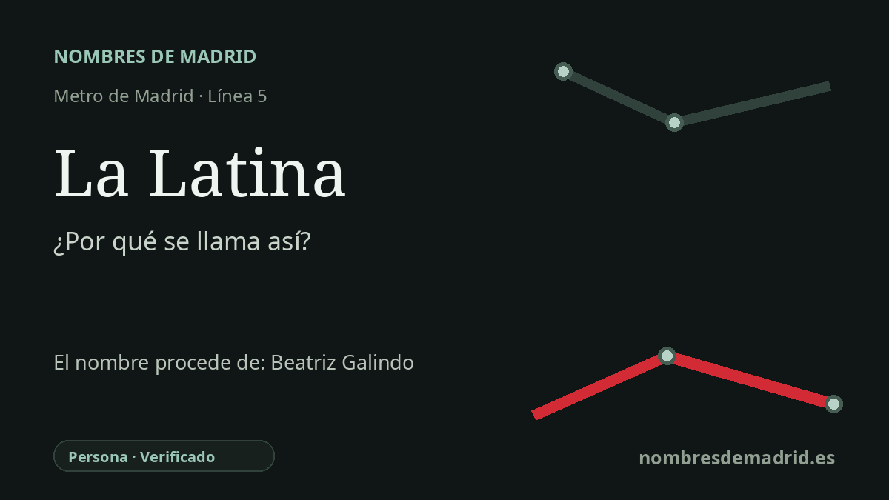

Publicado el · Investigación de Nombres de Madrid · Cómo verificamos cada origen · 7 fuentes consultadas
Respuesta rápida
La estación de La Latina toma su nombre de la zona madrileña del mismo nombre, que conserva el sobrenombre de Beatriz Galindo. La explicación mejor documentada vincula el topónimo sobre todo con sus fundaciones madrileñas junto a la calle de Toledo y la plaza de la Cebada.
La historia del nombre
La estación de La Latina lleva el nombre de la zona histórica madrileña situada en torno a la plaza de la Cebada y la calle de Toledo. El topónimo es anterior al Metro: cuando la línea 5 llegó a este punto en 1968, la estación tomó el nombre local ya asociado a una de las áreas más reconocibles de la ciudad.
Detrás de ese nombre está Beatriz Galindo, una mujer de la Castilla de finales del siglo XV y comienzos del XVI conocida por el sobrenombre de La Latina. Las fuentes oficiales de turismo y patrimonio de Madrid explican el topónimo por su fama de conocedora del latín y por su residencia, actividad y fundaciones benéfico-religiosas en esta parte de la ciudad.
El vínculo urbano más claro es el Hospital de La Latina. Fuentes archivísticas y culturales oficiales lo identifican como una fundación relacionada con Beatriz Galindo y su marido, Francisco Ramírez de Madrid, cerca de la calle de Toledo y la plaza de la Cebada. Esa institución, más que una dedicación directa de la estación de Metro, es el puente más sólido entre la figura renacentista y el nombre moderno de la parada.
La estación se encuentra además en un entorno donde la memoria comercial y popular de Madrid resulta muy visible. La plaza de la Cebada, las calles con nombres vinculados a oficios y mercados, el área del Rastro, los teatros y las verbenas tradicionales de agosto ayudan a entender por qué La Latina funciona ante todo como topónimo urbano: el apodo acabó integrado en el tejido de la ciudad.
La etimología general está bien respaldada, pero la biografía de Galindo es discutida. La Real Academia de la Historia la presenta como humanista y latinista, aunque limita su supuesto magisterio a conversaciones en latín con la reina Isabel; estudios académicos recientes van más lejos y sostienen que la documentación la muestra como criada de la Casa de la Reina, no como maestra formal. Para la estación, la formulación más prudente es: nombre tomado de la zona de La Latina, cuyo nombre procede en último término del sobrenombre de Beatriz Galindo y de las instituciones asociadas a ella en Madrid.